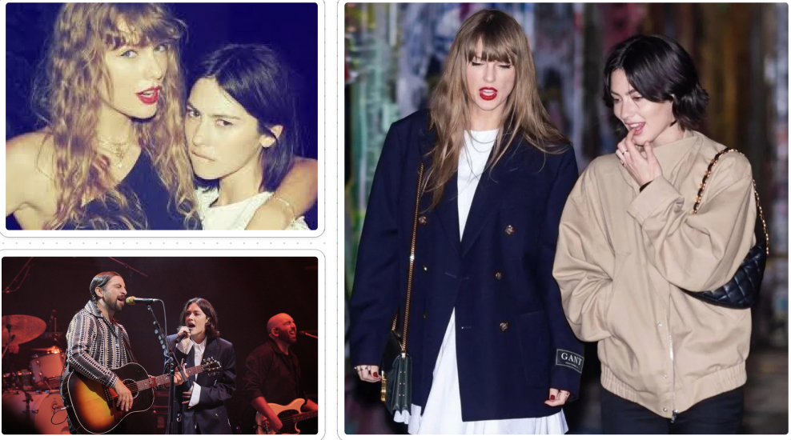
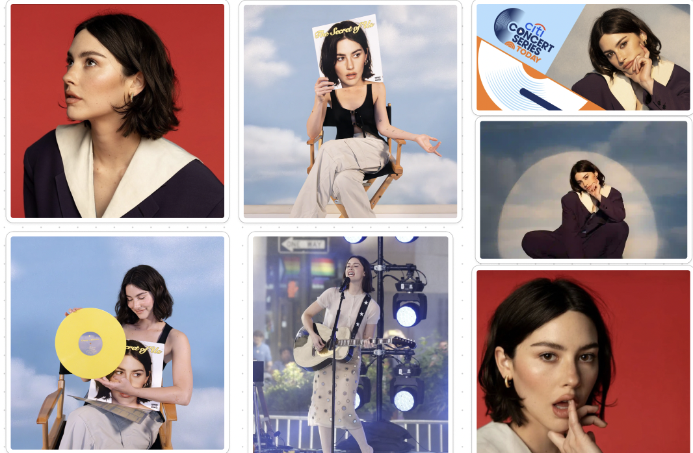
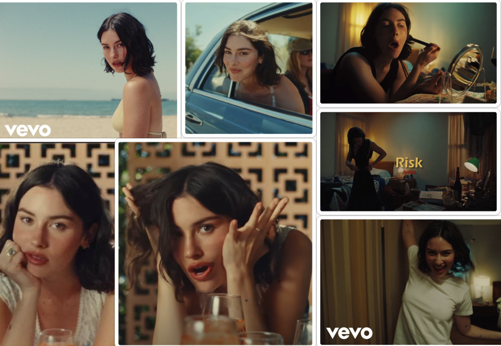
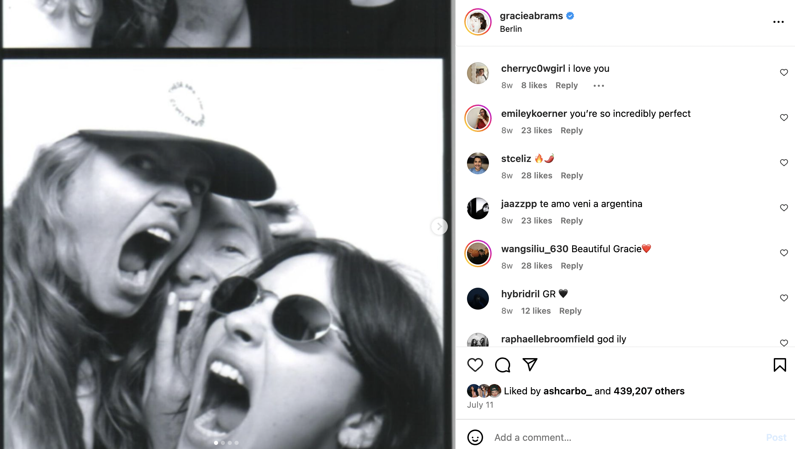

Collabs With Other Artists
Gracie has collaborated with well known artist such as Taylor Swift and Noah Kahan, which has helped her gain recognition and fans. She sings a song with Taylor Swift titled "Us" on her new album, The Secret of Us.
She also sang a song with Noah Kahan called "Everywhere, Everything" which is on his newest album and brought Gracie on stage with him during his tour.

Appearences: The Today Show
On June 28th, 2024, Gracie appeared on the Today Show in New York City and sang a few of her new releases like "Close To You" and "Risk" from The Secret of Us album. She also spoke with Hoda and Jena about her album.

Social Media + Music Video Releases
Gracie is very active on Instagram and is always posting for her followers. She has posted tour dates, behind the scenes of the album, her experiences like the Today Show, singing with Noah Kahan, and so much more. Her instagram lets her fan base get to know even the silly and fun sides of her. Also, She has released multiple music videos, which she will promote on her instgram as well.



